1 SVM基本原理 1.1 svm简介 支持向量机是在深度学习流行起来之前效果最好的模型，据说流行的时候是05年左右。
基本原理是二分类线性分类器，但现在也可以解决多分类问题，非线性问题和回归问题。
说实话感觉在学完其它主流分类之后比如决策树、贝叶斯，再来学习svm会好一点。因为确实数学理论相对来说比较复杂。我这里也打算做一个简单的介绍，推理啥的就不搞了，主要说一些结论。
svm的全称是support vector machines，支持向量机，汉字都懂，组合一块就懵了。实际上，支持向量是我们需要搞懂的，知道了什么是支持向量，那么自然也就明白这个算法再干什么事了。这个算法可以由一个这样的问题引出：
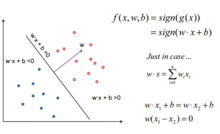
先有感知机的问题，即上面这个图，如何画一条直线，把两类很好的分开。感知机我目前也还没学到，后面会补。但是可以画出这么一条线，把两个类分开。但是在这个空隙中我们其实可以找到无数条线把这两簇点分开，那哪条线是最好的那条呢？
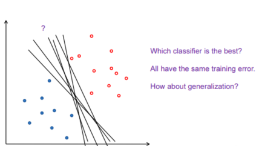
Margin：将分界面向两个方向平移至不能平移的位置（他碰到了一个点），可以平移的距离叫做Margin（间隔）。正好卡住这些分界面的点称为Support Vectors。不同方向的Margin不同，Support Vectors也不同。直观上说，Margin越大，容错性越强。所以，希望这个分界面的Margin越大越好。SVM就可以最大化Margin（线性支持向量机）。
我们就定义找到的那条线就是：沿着这条线法向量平移，向法向量的前后都平移，所碰到第一个点的距离（因为两个簇所以至少有两个点）最大的那条线，并且这两个点的距离距离这条线相等。这条线就是我们认为最好的那条决策边界。所碰到的点就被称之为支持向量。
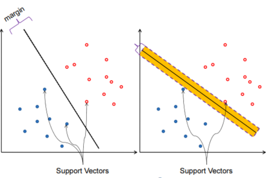
SVM模型的求解最大分割超平面问题，就是确定一个超平面能最合理的对二分类问题分类，感知机是找到一个超平面，svm是找到一个最好的超平面，可以使点尽可能远离决策超平面，从而更好地分类。
1.2 svm的数学原理 如果真想去了解一下数学原理的，可以看一下b站的这个老师，讲了四个小时，逻辑很清晰，但是由于不是搞数学的，里面涉及到一些理论他还是以结论的方式来用了，不过相对来说还是讲的不错的，能让我一个工科生刚好明白的（虽然过几天就忘了），但确实更好理解了，比直接硬记要好一丢丢，链接：https://www.bilibili.com/video/BV1jt4y1E7BQ/。
这个博客也不错：https://aistudio.baidu.com/projectdetail/1691063?ad-from=1694
我们还是简单记录一下svm的数学原理。
两个目标：样本分对；最大化Margin（最小化 w乘以w的转置 ）
样本是两类：+1，-1（标签），+1的样本必须wx+b>=1，才是将样本分对。如下图
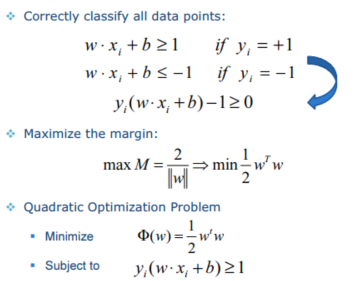
拉格朗日乘数法：（拉格朗日系数：α），分别对w、b求导，结果很重要。将结果带回，得到新的目标函数（与上面的函数是对偶问题）。原问题和对偶问题一般情况下是不等价的，但在SVM情况下满足一些条件，所以是等价的。所以转为求 ��L**D 的问题，其是由α组成的（有条件约束），简化了问题。
解方程，得到很多α的值。很多α都是=0的，只有少数是不等于0的，这些不等于0的是Support Vectors。因为α=0的不对w作任何contribution。随便挑选一个support vector就可以将b求出来。用多个support vectors也可以，求解完累加，再除上个数就可以。
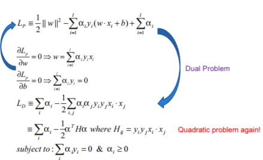
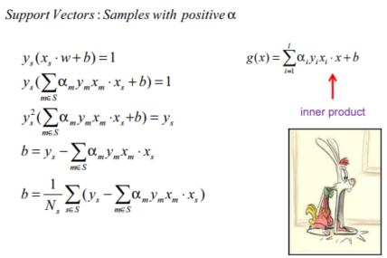
看式子可以知道：训练完成后，大部分的训练样本都不需要保留，最终模型仅与支持向量有关。
松弛变量虽然可以让我们表示那些被错误分类的样本，但是我们当然不希望它随意松弛，这样模型的效果就不能保证了。所以我们把它加入损失函数当中，希望在松弛得尽量少的前提下保证模型尽可能划分正确。
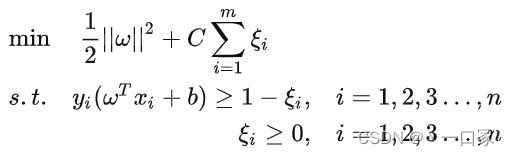
这里的C是一个常数，可以理解成惩罚参数。我们希望||w||2尽量小，也希望∑尽量小，这个参数C就是用来协调两者的。C越大代表我们对模型的分类要求越严格，越不希望出现错误分类的情况，C越小代表我们对松弛变量的要求越低。
从形式上来看模型的学习目标函数和之前的硬间隔差别并不大，只是多了一个变量而已。这也是我们希望的，在改动尽量小的前提下让模型支持分隔错误的情况。
根据拉格朗日乘子法，两组不等式引入两个拉格朗日函数，α和μ，最后写出L。
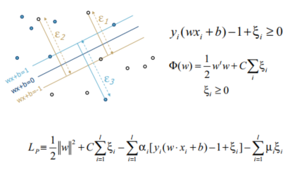
仍按原来的方式求解：引入了一个soft margin，但最终结果并没有很复杂。发现与原来的类似，只有<=C不同。
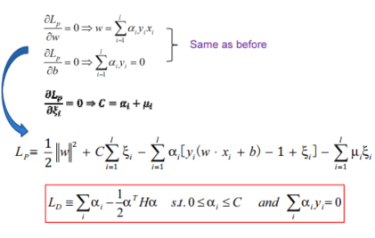
1.3 高斯核函数 核函数 是机器学习算法中一个重要的概念。简单来讲，核函数就是样本数据点的转换函数。我们来看看应用非常广泛的一个核函数，高斯核函数。
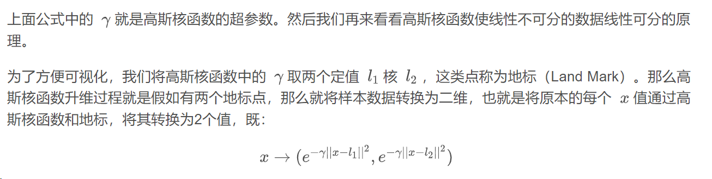
1 2 3 4 5 6 7 8 9 10 11 12 13 14 15 16 import numpy as npimport matplotlib.pyplot as plt4 , 5 , 1 )4 , -3 , -2 , -1 , 0 , 1 , 2 , 3 , 4 ])2 ) & (x <= 2 ), dtype='int' )0 , 0 , 1 , 1 , 1 , 1 , 1 , 0 , 0 ])0 ], [0 ]*len (x[y==0 ]))1 ], [0 ]*len (x[y==1 ]))
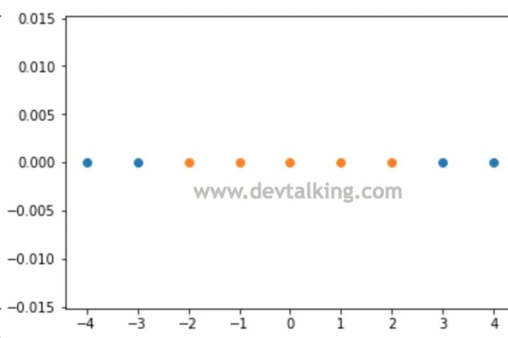
1 2 3 4 5 6 7 8 9 10 11 12 13 14 15 def gaussian (x, l ):1.0 return np.exp(-gamma * (x - l)**2 )1 , 1 len (x), 2 ))for i, data in enumerate (x):0 ] = gaussian(data, l1)1 ] = gaussian(data, l2)0 , 0 ], X_new[y==0 , 1 ])1 , 0 ], X_new[y==1 , 1 ])
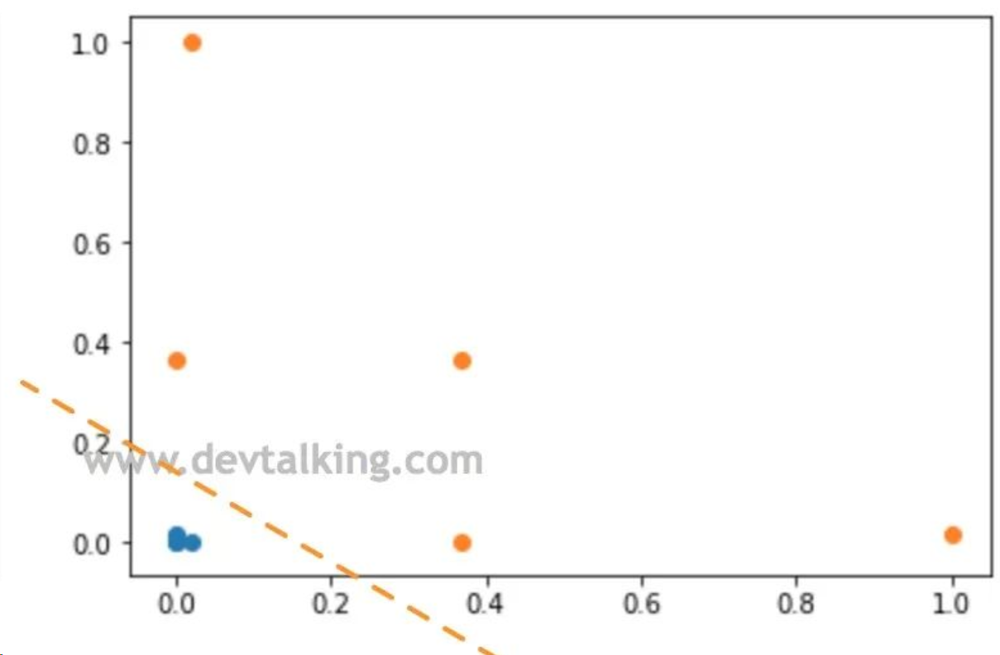
1.4 算法运行流程 可以得出svm算法流程大致如下：
xi表示输入数据的向量表示，yi表示对应数据的分类情况。
分类决策函数就是那个数的值，如果大于0，则分到第一类，否则分到第二类。
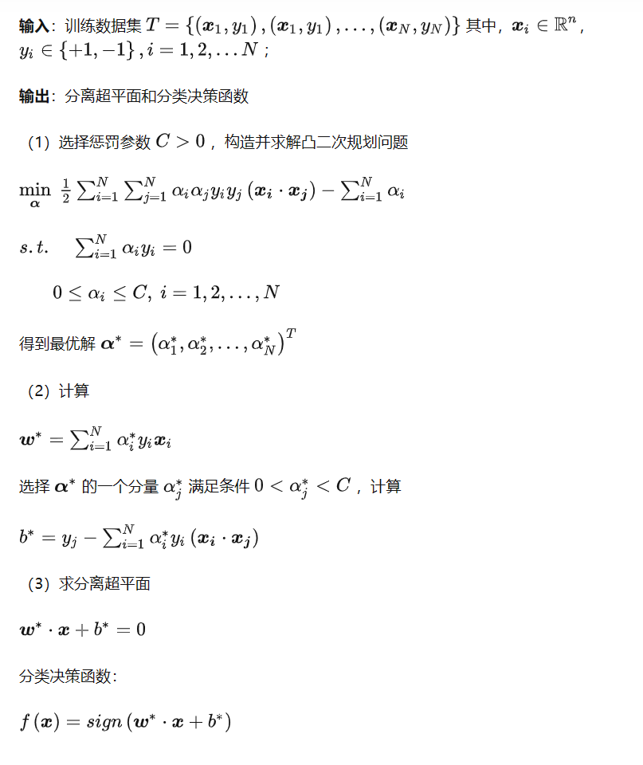
求解过程举例:
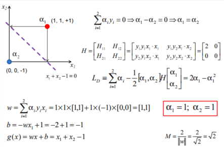
最主要的是求出w和b。
就算上面的数学全部不懂也没关系，你最起码需要知道svm到底干了什么事情，在解决什么样的问题，配合例子理解其实也就够了。
1.5 基于sklearn的样例 1 2 3 4 5 6 7 8 9 10 11 12 13 14 15 16 17 18 19 20 21 22 23 24 25 26 27 28 29 30 31 32 33 34 35 36 37 38 39 40 41 42 43 44 45 46 47 48 49 50 51 52 53 54 55 56 57 58 59 60 61 62 63 64 65 66 67 68 69 70 71 72 73 74 75 76 77 78 79 80 81 82 83 84 85 86 87 88 89 90 91 92 93 94 95 96 97 98 99 100 101 102 103 104 105 106 107 108 109 110 111 112 113 114 115 116 117 118 119 import numpy as npimport osimport matplotlib as mplimport matplotlib.pyplot as pltfrom sklearn import datasetsfrom sklearn.pipeline import Pipelinefrom sklearn.preprocessing import StandardScalerfrom sklearn.svm import LinearSVC"axes" ,labelsize=14 )"xtick" ,labelsize=12 )"ytick" ,labelsize=12 )2 ,3 )]"target" ]==2 ).astype(np.float64)"scaler" ,StandardScaler()),"linear_svc" ,LinearSVC(C=1 ,loss="hinge" ,random_state=42 ))5.5 ,1.7 ]])1 ,loss="hinge" ,random_state=42 )100 ,loss="hinge" ,random_state=42 )"scaler" ,scaler),"linear_svc" ,Linesvc1)"scaler" ,scaler),"linear_svc" ,Linesvc2)0 ] / scaler.scale_0 ] / scaler.scale_2 -1 1 ).ravel()1 ).ravel()def plot_svc (svm_clf,xmin,xmax ):0 ]0 ]200 )0 ]/w[1 ] * X0 - b/w[1 ]1 /w[1 ]0 ],svs[:,1 ],s=180 ,facecolors="#FFAAAA" )"k-" ,linewidth=2 )"k--" ,linewidth=2 )"k--" ,linewidth=2 )2 ,figsize=(10 ,2.7 ),sharey=True )0 ])0 ][Y==1 ],X[:,1 ][Y==1 ],"g^" ,label="Iris virginica" )0 ][Y==0 ],X[:,1 ][Y==0 ],"bs" ,label="Iris versicolor" )4 ,5.9 ,0.8 ,2.8 ])4 ,5.9 )"length" )"width" )"upper left" )"$C={}$" .format (Linesvc1.C))1 ])0 ][Y==1 ],X[:,1 ][Y==1 ],"g^" ,label="Iris virginica" )0 ][Y==0 ],X[:,1 ][Y==0 ],"bs" ,label="Iris versicolor" )4 ,5.9 ,0.8 ,2.8 ])4 ,5.9 )"$C={}$" .format (Linesvc2.C))"ouput_plot/demo.png" )
可以看到C较大时容忍度较小，C小时，容忍度较大。
2 SVM处理非线性问题 总有一些是无法用直线进行分类的。
对于其他算法来说，比如决策树，贝叶斯，它们的方法是放松拟合的要求，即我的分界线或者叫分界超平面可以不是直线、平面之类的，可以是椭圆，可以是树，可以是其他形状。
svm解决非线性问题的思路是把当前的问题的维度升高，以此来获得高位空间的线性效果。
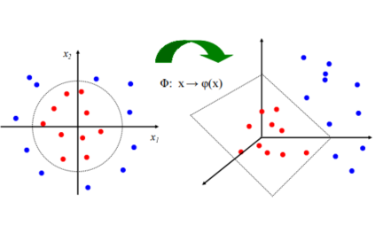
从低维映射至高维，通过公式，大概含义例如有一个100维的数据，映射至5000维。理论上，映射到无限维就可以尽量接近线性，首先从操作上不可能，计算机只能尽可能地提高维度而不能设置无限维度，还有就是计算问题，越高维度，计算量越大。
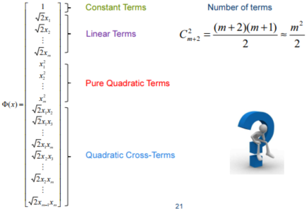
但是存在一个表达式（核函数，Kernel），数学上证明，低维度该计算公式可以得到与高维度计算得出相同的结果，既保证的提高维度，又降低了计算复杂度。
发现转为高维的求解函数，仍与低维的基本一致。核函数的强悍！
常见的有线性核函数，多项式核函数，高斯核函数（最常用）等。
看一下sklearn的参数解释，我们先会用：
1 2 3 4 5 6 7 8 9 10 11 12 13 14 15 16 17 18 19 20 - C：C-SVC的惩罚参数C?默认值是1.0^ degree^ 2)_ features_ size ：核函数cache缓存大小，默认为200_ weight ：类别的权重，字典形式传递。设置第几类的参数C为weight*C(C-SVC中的C_ iter ：最大迭代次数。-1为无限制。_ function_ shape ：‘ovo’, ‘ovr’ or None, default=None3_ state ：数据洗牌时的种子值，int值
举个例子：
分别利用多项式和高斯核函数对数据进行分析。
make_moons 函数生成的数据集由两个半圆形状组成，其中一个半圆表示一个类别，另一个半圆表示另一个类别。这个数据集通常用于二分类问题的演示和实验。
1 2 3 4 5 6 7 8 9 10 11 12 13 14 15 16 import matplotlib.pyplot as pltfrom sklearn.datasets import make_moons100 ,noise=0.15 ,random_state=42 )def plot_data (X,y,axes ):0 ][y==0 ],X[:,1 ][y==0 ],"bs" )0 ][y==1 ],X[:,1 ][y==1 ],"g^" )True ,which="both" )r"$x_1$" )r"$x_2$" )1.5 ,2.5 ,-1 ,1.5 ])
数据大致如下：
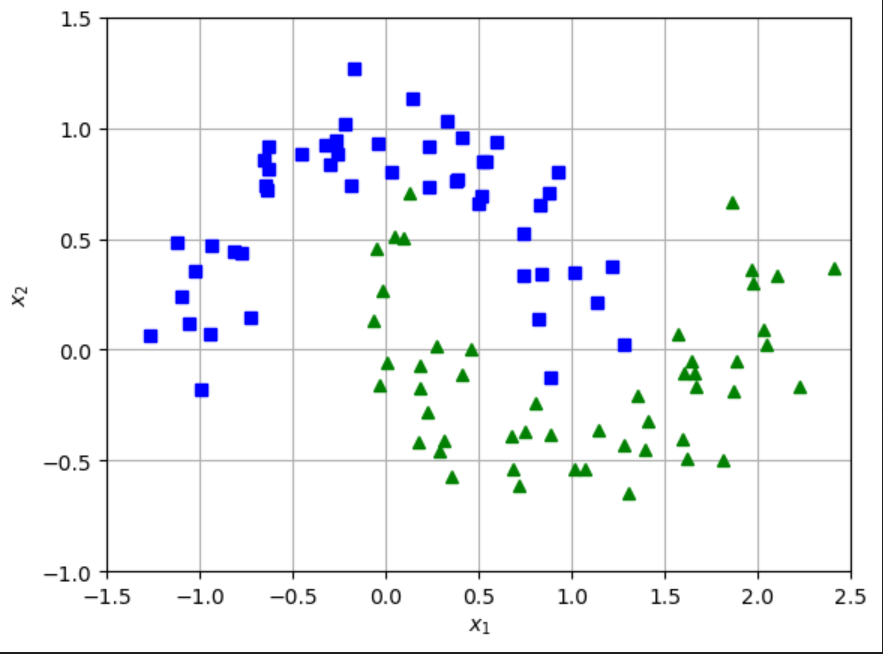
由此可见是一个非线性可分的二分类任务。
先用多项式核进行分类，分别设置他们的最高次项，一个为3一个为10
1 2 3 4 5 6 7 8 9 10 11 12 13 14 15 16 17 18 19 20 21 22 23 24 25 26 27 28 29 30 31 32 33 34 35 36 37 38 39 40 41 42 43 44 from sklearn.preprocessing import StandardScalerfrom sklearn.svm import SVCfrom sklearn.pipeline import Pipelinefrom sklearn.svm import LinearSVCdef poly_predictions (clf,axis ):0 ],axis[1 ],100 )2 ],axis[3 ],100 )0.2 )0.1 )"scaler" ,StandardScaler()),"svm_clf" ,SVC(kernel="poly" ,degree=3 ,coef0=1 ,C=5 ))"scaler" ,StandardScaler()),"svm_clf" ,SVC(kernel="poly" ,degree=10 ,coef0=1 ,C=5 ))2 ,figsize=(12 ,4 ),sharey=True )0 ])1.5 ,2.5 ,-1 ,1.5 ])1.5 ,2.5 ,-1 ,1.5 ])1 ])1.5 ,2.5 ,-1 ,1.5 ])1.5 ,2.5 ,-1 ,1.5 ])"ouput_plot/poly.png" )
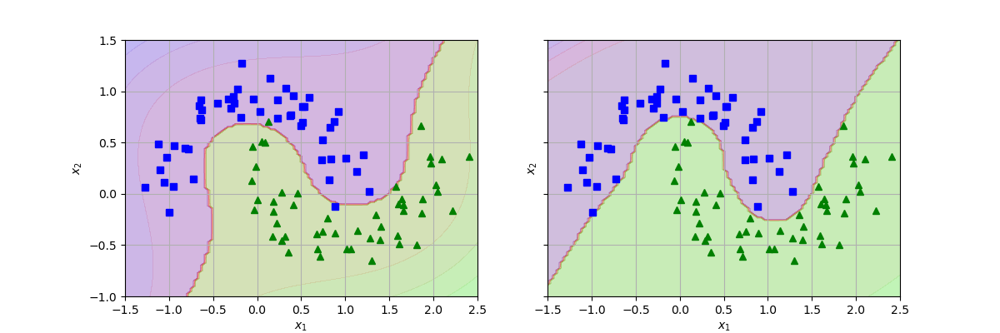
可以看出来，次项较高时对数据模拟效果更好，边界越准，同时容错率也较低。
再用一下高斯核。
1 2 3 4 5 6 7 8 9 10 11 12 13 14 15 16 17 18 19 20 21 22 23 24 25 26 27 28 0.1 ,1 1 ,100 for gamma,C in hyperparams:"scaler" ,StandardScaler()),"svm_clf" ,SVC(kernel="rbf" ,gamma=gamma,C=C))2 ,nrows=2 ,figsize=(10 ,6 ),sharex=True ,sharey=True )for i,svm_guss_clf1 in enumerate (svm_guss_clfs):2 ,i%2 ])1.5 ,2.5 ,-1 ,1.5 ])1.5 ,2.5 ,-1 ,1.5 ])r"$\gamma={},C={}$" .format (gamma,C))"ouput_plot/guss.png" )
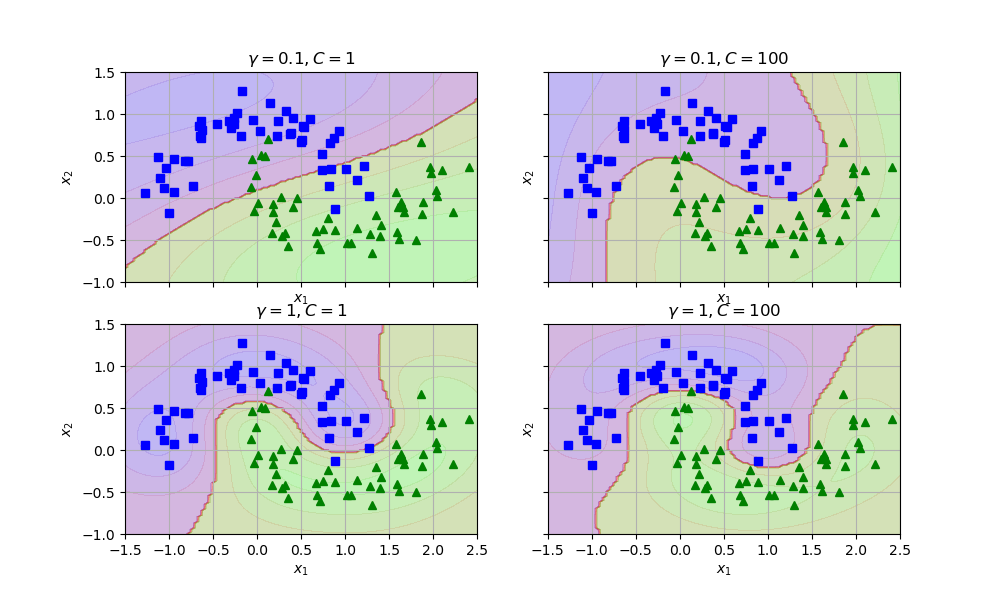
参数过小会欠拟合，如第一个子图，参数过大会过拟合，比如第四个图。
边界较为平滑的我们认为分类效果不错。关于参数的选择及调优问题我们放在第五节讲。
3 SVM处理多分类问题 二分类问题是多分类问题的特殊情况。如果能处理二分类，那么对于多分类，可以把其看成一类和其他类来处理，递归下去，总会处理完。svm就可以借助这样的思想处理多分类问题。
比较直接的方式就是：直接在目标函数上进行修改，将多个分类面的参数求解合并到一个最优化问题中，通过求解该最优化问题“一次性”实现多类分类。这种方法看似简单，但其计算复杂度比较高，实现起来比较困难，只适合用于小型问题中。而且我目前刚学，还没接触到谁这么干的。
一般采用间接方法：
主要是通过组合多个二分类器来实现多分类器的构造，常见的方法有 one-against-one 和 one-against-all 两种，不懂得可以查一下。我这里简单说一下：
1 2 3 4 5 6 7 8 9 10 11 12 13 14 一对多A 分类正样本，BC 那个类分为负样本B 分类正样本，AC 那个类分为负样本C 分类正样本，AB 那个分类为负样本D ，分别丢到3 个分类器中，然后看那个分类器的得分高，那么就把数据判别为哪个类别AB 分为一组正负样本AC 分为一组正负样本BC 分为一组正负样本D ，分别丢到3 个分类器中，统计哪个类别出现的次数最多，那就把数据判别为哪个类别OVR 还是比较多的，默认也就是OVR 。如果有n 个类别，那么使用OVO 训练的分类器就是，因此一般情况下使用OVR 这种分类。
下面我将使用scikit-learn中的鸢尾花（Iris）数据集作为示例，演示如何使用SVM处理多分类问题。
其实默认情况下就是一对一：
1 2 3 4 5 6 7 8 9 10 11 12 13 14 15 16 17 18 19 20 21 22 23 24 25 from sklearn import datasetsfrom sklearn.model_selection import train_test_splitfrom sklearn.svm import SVCfrom sklearn.metrics import accuracy_score0.2 , random_state=42 )'linear' )print ("Accuracy:" , accuracy)
使用类OneVsRestClassifier实现一对多
1 2 3 4 5 6 7 8 9 10 11 12 13 14 15 16 17 18 19 20 21 22 23 24 25 26 27 28 29 from sklearn import datasetsfrom sklearn.model_selection import train_test_splitfrom sklearn.svm import SVCfrom sklearn.multiclass import OneVsRestClassifierfrom sklearn.metrics import accuracy_score0.2 , random_state=42 )'linear' )print ("Accuracy:" , accuracy)
在这个问题上，一对一的准确率是1，不知道为啥，就是很高，有点难以置信，然后一对多是0.96左右。
4 SVM处理回归问题 svm处理分类问题，是找到一个最大的间隔，让点尽可能地让点进行分开。svm处理回归问题，是找到一个最小的间隔，让点尽可能的落在间隔内。
线性回归举例：
1 2 3 4 5 6 7 8 9 10 11 12 13 14 15 16 17 18 19 20 21 22 23 24 25 26 27 28 29 30 31 32 33 34 35 36 37 38 39 40 41 42 43 44 45 46 47 48 49 50 51 52 53 54 55 56 57 58 59 60 61 62 63 64 import numpy as npfrom sklearn.svm import LinearSVRdef find_support_vectors (svm_reg,X,y ):abs (y-y_pred)>=svm_reg.epsilon)return np.argwhere(off_margin)def plot_svm_regression (svm_reg,X,y,axes ):0 ],axes[1 ],100 ).reshape(100 ,1 )"k-" )"k--" )"k--" )180 ,facecolor="#FFAAAA" )"bo" )r"$x_1$" )42 )50 2 * np.random.rand(m,1 )5 +3 *X+np.random.randn(m,1 )).ravel()0.5 ,random_state=42 )1.5 ,random_state=42 )1 2 ,figsize=(10 ,6 ),sharey=True )0 ])0 ,2 ,3 ,11 ])r"$\epsilon = {}$" .format (svm_reg1.epsilon))r"$y$" )'' ,xy = (eps_x1,eps_y_pred),xycoords="data" ,"data" ,arrowprops={'arrowstyle' :'<->' ,"linewidth" :1.5 }0.91 ,5.6 ,r"$\epsilon$" )1 ])0 ,2 ,3 ,11 ])r"$\epsilon = {}$" .format (svm_reg2.epsilon))"ouput_plot/line_reg.png" )
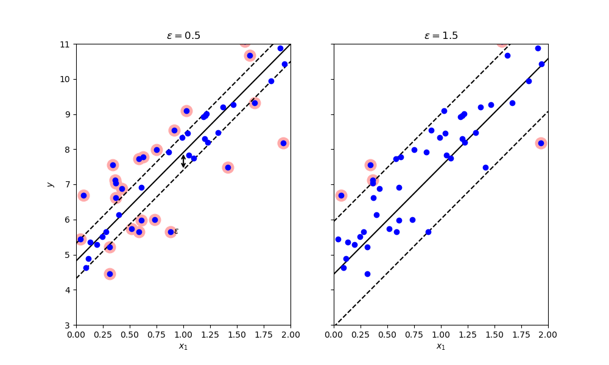
epsilon越大，容忍性越大。黑线就是我们回归找到的回归线。
非线性回归举例：
1 2 3 4 5 6 7 8 9 10 11 12 13 14 15 16 17 18 19 20 21 22 23 24 25 26 27 28 29 30 31 32 33 34 35 36 37 38 from sklearn.svm import SVR42 )100 2 *np.random.rand(m,1 )-1 0.2 +0.2 *X+0.6 *X**2 +np.random.randn(m,1 )/10 ).ravel()"poly" ,degree=2 ,C=0.01 ,epsilon=0.1 )"poly" ,degree=2 ,C=100 ,epsilon=0.1 )"rbf" ,C=1 ,epsilon=0.1 ,gamma=0.1 )"rbf" ,C=1 ,epsilon=0.1 ,gamma=0.1 )"rbf" ,C=100 ,epsilon=0.1 ,gamma=10 )"rbf" ,C=100 ,epsilon=0.1 ,gamma=10 )2 ,figsize=(16 ,9 ),sharey=True )0 ])1 ,1 ,0 ,1 ])r"$degree={} , C={} ,\epsilon={}$" .format (svm_poly_reg1.degree,svm_poly_reg1.C,svm_poly_reg1.epsilon))r"$y$" )1 ])1 ,1 ,0 ,1 ])r"$degree={}, C={} ,\epsilon={}$" .format (svm_poly_reg2.degree,svm_poly_reg2.C,svm_poly_reg2.epsilon))"ouput_plot/ploy_reg.png" )
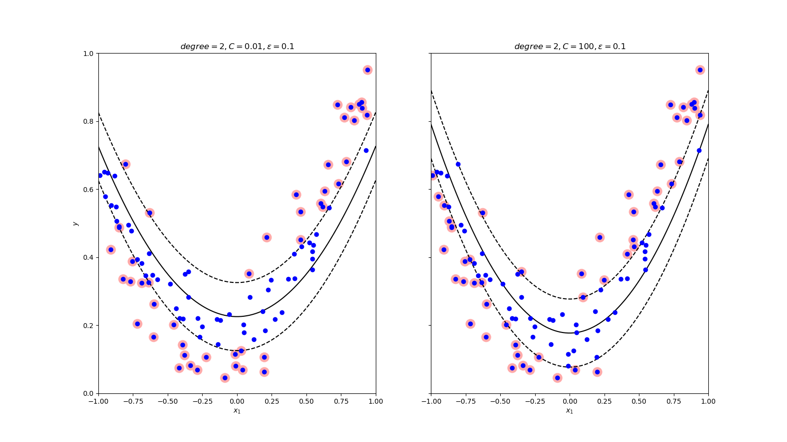
epsilon越大，越宽。
当C较小时，模型对误分类的惩罚增加，会倾向于选择较大间隔（margin）的决策边界。这会使得模型更加简单，偏向于做出更平滑的预测。当C较大时，模型对误分类的惩罚减小，会倾向于选择较小间隔的决策边界。这会使得模型更加复杂，可能更好地拟合训练数据，但也可能更容易过拟合。
较小的C值和较大的epsilon值会导致模型更加简单，对噪声和异常值更具鲁棒性，但可能会损失一定的拟合能力。较大的C值和较小的epsilon值会使模型更加复杂，更好地拟合训练数据，但可能会对噪声和异常值更敏感。较大的C和较大的epsilon值会使支持向量机（SVM）模型更加自由，更容易拟合训练数据。较小的C和较小的epsilon值会使支持向量机（SVM）模型更加正则化和对预测误差更加敏感。
1 2 3 4 5 6 7 8 9 10 11 12 13 14 15 16 17 18 19 20 21 22 23 24 25 26 27 28 29 30 31 32 33 34 35 "rbf" ,C=1 ,epsilon=0.1 ,gamma=0.1 )"rbf" ,C=1 ,epsilon=0.1 ,gamma=0.1 )"rbf" ,C=100 ,epsilon=0.1 ,gamma=10 )"rbf" ,C=100 ,epsilon=0.1 ,gamma=10 )2 ,nrows=2 ,figsize=(16 ,9 ),sharey=True )0 ,0 ])1 ,1 ,0 ,1 ])r"$gamma={}, C={} ,\epsilon={}$" .format (svm_gmm_reg1.gamma,svm_gmm_reg1.C,svm_gmm_reg1.epsilon))r"$y$" )0 ,1 ])1 ,1 ,0 ,1 ])r"$gamma={}, C={} ,\epsilon={}$" .format (svm_gmm_reg2.gamma,svm_gmm_reg2.C,svm_gmm_reg2.epsilon))1 ,0 ])1 ,1 ,0 ,1 ])r"$gamma={}, C={} ,\epsilon={}$" .format (svm_gmm_reg3.gamma,svm_gmm_reg3.C,svm_gmm_reg3.epsilon))1 ,1 ])1 ,1 ,0 ,1 ])r"$gamma={}, C={} ,\epsilon={}$" .format (svm_gmm_reg4.gamma,svm_gmm_reg4.C,svm_gmm_reg4.epsilon))"ouput_plot/guss_reg.png" )
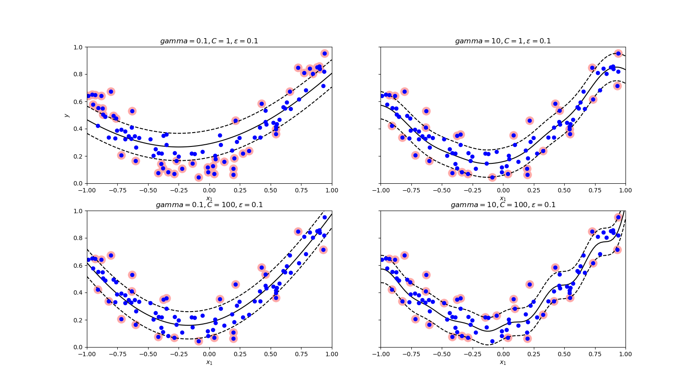
左右比看gamma，上下比看C。
C越大，越复杂，gamma越大越复杂。都容易过拟合。epsilon没拿出来对比，和多项式差不多一个道理。
所以选择好的参数是比较重要的。
5 SVM的优化 在第2节和第4节的多项式和高斯分类及回归中，我们可以知道，参数的选择对于svm的高斯核来说至关重要。
选择合适的gamma和C是重要的。
另外，一个模型的训练速度是必要的。我们前文提到无限维的运算量是接受不了的，所以转换成高斯核，极大的降低了计算量，但是是否还有其它优化速度的方法呢？
5.1 交叉验证法+网格搜索法确定超参数 交叉验证可以网上搜索原理及过程，不难，网格搜索法说白了也可以认为就是暴力枚举。
就还是拿第2节中的月牙数据集做分析。
在不知道用哪个核函数的情况：
1 2 3 4 5 6 7 8 9 10 11 12 13 14 15 16 17 18 19 20 from sklearn.model_selection import GridSearchCVfrom sklearn.preprocessing import StandardScaler100 ,noise=0.15 ,random_state=42 )'kernel' : ('linear' , 'rbg' , 'poly' ),'C' : [0.01 , 0.1 , 0.5 , 1 , 2 , 10 , 100 ,1000 ,10000 ]10 )print ('最好的参数组合：' , model.best_params_)print ('最好的score：' , model.best_score_)
这里给出了是结果是：
最好的参数组合： {‘C’: 100, ‘kernel’: ‘poly’} 最好的score： 0.9
紧接着网格搜索其他参数：
1 2 3 4 5 6 7 8 9 10 11 12 13 14 15 16 17 18 19 20 21 22 23 24 25 26 27 28 from sklearn.model_selection import GridSearchCVfrom sklearn.svm import SVCfrom sklearn.metrics import accuracy_scorefrom sklearn.datasets import make_classificationfrom sklearn.model_selection import train_test_split100 ,noise=0.15 ,random_state=42 )'poly' )'degree' : [2 , 3 , 4 ], 'C' : [0.001 ,0.01 ,0.1 , 1 , 10 ], 'accuracy' 10 )print ('最好的参数组合：' , model.best_params_)print ('最好的score：' , model.best_score_)
最好的参数组合： {‘C’: 0.1, ‘degree’: 3} 最好的score： 0.8900000000000002
有点怪，但是也不怪，因为加了个参数，所以C又变了。。。
5.2 多分类任务选择一对多还是一对一 先说结论：数据量大用一对多，数据量小用一对一
一对多策略适用于数据集规模较大的情况，其中每个类别都有一个二分类器来区分该类别与其他所有类别。在训练阶段，针对每个类别训练一个二分类器，将该类别作为正例，其他类别作为负例。在预测阶段，通过这些二分类器的结果来确定最终的类别。
一对一策略适用于数据集规模较小的情况，其中针对每对类别都训练一个二分类器。例如，对于K个类别，将任意两个类别组合成一对，总共需要训练K(K-1)/2个二分类器。在预测阶段，通过所有二分类器的投票来确定最终的类别。
一对多策略的优势在于训练时间较短，因为每个二分类器只需要针对一个类别进行训练。而一对一策略的优势在于预测时间较短，因为只需要对每个二分类器进行一次预测，并通过投票来确定最终的类别。
在实际应用中，通常根据数据集的规模和性能需求来选择使用哪种策略。如果数据集较大，一对多策略可能更合适。如果数据集较小，一对一策略可能更适合。
5.3 优化svm的训练速度 当数据量较大，需要交叉验证，需要多分类时会让训练速度变得很慢。那么提高svm的训练速度就是必要的。
这里主要想说明的就是部分数据的训练就可以达到很好的效果+交叉验证加速。
运行下面代码需要保证网络，从网上下载数据集。
1 2 3 4 5 6 7 from sklearn.datasets import fetch_openml"/optimize/" "mnist_784" ,version=1 ,data_home=data_path,as_frame=False )
查看大小
(70000, 784)
还是蛮大的，70000行，784个列。使用LinearSVC训练。
所用时间1m36.5s，时间比较长。
1 2 3 4 5 6 7 8 9 10 11 12 13 14 15 16 17 from sklearn.svm import LinearSVCimport numpy as np"data" ]"target" ].astype(np.uint)60000 ]60000 ]60000 :]60000 :]42 )
评价一下模型的准确率：
1 2 3 4 from sklearn.metrics import accuracy_score
输出：0.8348666666666666
能不能提升准确率呢，可以，标准化对svm又比较好的影响。
1 2 3 4 5 6 7 8 9 from sklearn.preprocessing import StandardScaler42 )
时间用了10m21.9s，时间很长，再看一下准确率
1 2 3 4 from sklearn.metrics import accuracy_score
得到0.9214，确实提升了不少。
但是对于minst数据集来说，这样的结果其实并不是很好。
到这里你只需要知道线性拟合效果不是特别理想，并且速度比较慢。
所以我们改用另一个拟合，高斯拟合。且默认使用SVC，多分类采用一对一，速度更快一点。
1 2 3 4 5 6 7 8 from sklearn.svm import SVC"scale" )10000 ],y_train[:10000 ])
时间4.8s
1 2 3
准确率：0.9455333333333333
能否更高呢，我们知道高斯需要合适的参数，交叉验证使用随机交叉验证。
尝试更小的参数数据集，1000个。
1 2 3 4 5 6 7 8 9 10 from sklearn.model_selection import RandomizedSearchCVfrom scipy.stats import reciprocal,uniform"gamma" :reciprocal(0.001 ,0.1 ),"C" :uniform(1 ,10 )}10 ,verbose=2 ,cv=3 )1000 ],y_train[:1000 ])
很快
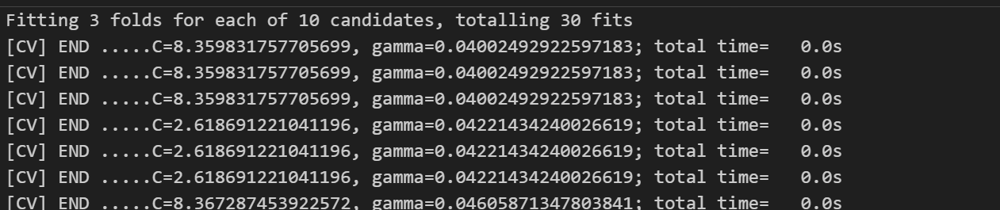
1 2 print (rnd_search_cv.best_estimator_)print (rnd_search_cv.best_score_)
输出：
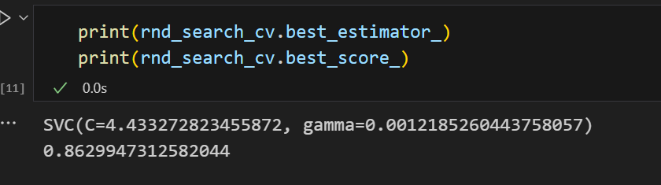
效果并不好，可以考虑扩大数据集，因为毕竟才用了1000个。
继续在原有的基础上训练：
1 rnd_search_cv.best_estimator_.fit(std_train_x,y_train)
用时3m28.2s。
再看在训练集上的准确率：
1 2 3 4 from sklearn.metrics import accuracy_scoreprint (accuracy_score(y_train,y_pred))
0.9963333333333333
99.6%，嗯挺高了。
再看在测试集的：
1 2 3 4 print (accuracy_score(y_test,y_pred))
0.9719
97.2%，也不错。
可以看出使用较小样本进行交叉验证，确定大致的参数后，随后再在原有的模型追加训练，时间更短，效果也不错。
这5.3小节主要是讲了随机小样本交叉验证的提速。
如果这篇博客给到您帮助，我希望您能给我的仓库点一个star，这将是我继续创作下去的动力。
我的仓库地址，https://github.com/Guoxn1?tab=repositories